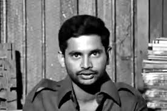

15 JAN 1947-14 APR 1972
"Jeena Hain to Marna Seekho. Kadam Kadam Par Ladna Seekho."
In the early 1970’s, a desi Che Guevara was taking shape in the Nizam-era campus of Osmania University. Post graduate student George Reddy went on a cycle, inspired by 'Motorcycle Diaries', to Warangal town, which is about 150km from Hyderabad. There, he met the students of Kakatiya Medical College and Kakatiya University. Both the colleges were known to be the hotbed of far-left ideology. During his stay in the town, he also met with sympathisers of the naxal underground movement and held extensive discussions.
According to his followers, George was preparing himself to play an active part in the naxal underground movement. George established contact with naxal sympathisers because he wanted to play a key role in changing the political system, and like Che, he too wanted to take the big leap after this journey. A few months later, he was killed by members of a student group affiliated to far-right wing Jan Sangh.
George Reddy was born to a Malayali Christian mother and a upper caste Reddy father. He grew up and studied in various places before he shone bright in campus politics. From early days, he was known to be highly intelligent, a voracious reader, a boxer and a rebel. His foray into student politics was through NSUI before he founded PDSU (Progressive Democratic Students Union).
George was known to spend hours in the library. He gained a massive following among students as he began to spread his political thoughts among them. It goes without saying that at the time of his death, George was not just popular in the campus but also across the state. Senior politicians also started noticing the fame that George enjoyed. His biggest enemy was the RSS and its sympathisers and there were frequent clashes on the campus between these two groups. Ask any of his followers about what future did George have? Answers range from he could have won awards for physics to ruling this country, had he joined mainstream politics. Some also feel the Maoist movement would have been entirely different had he joined it.
Not everyone may subscribe to George’s brand of politics, but no one can deny that he was an interesting and dynamic character.